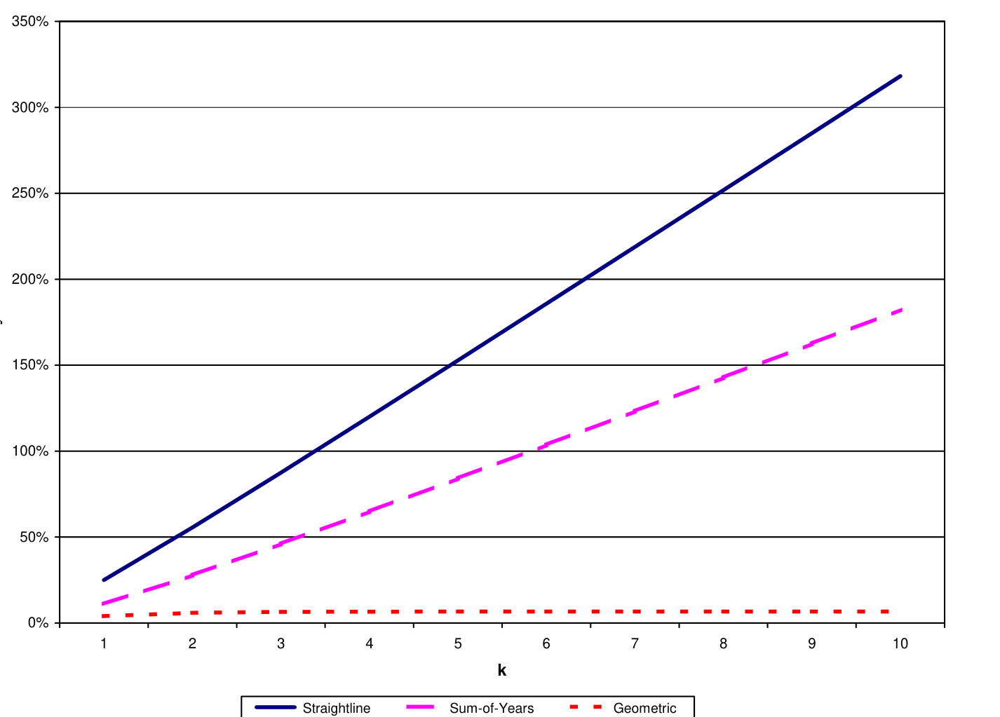
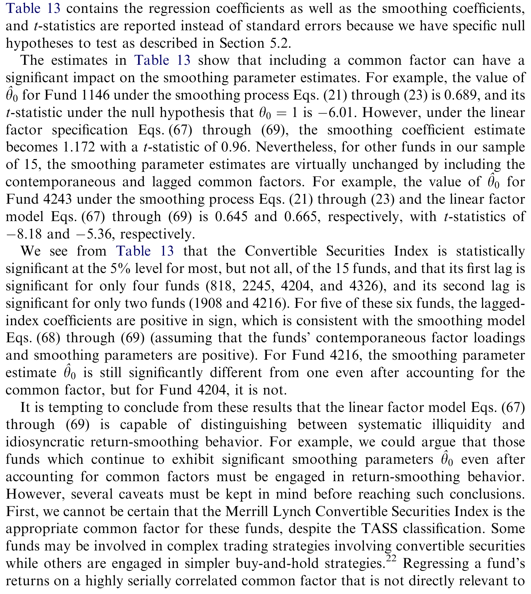
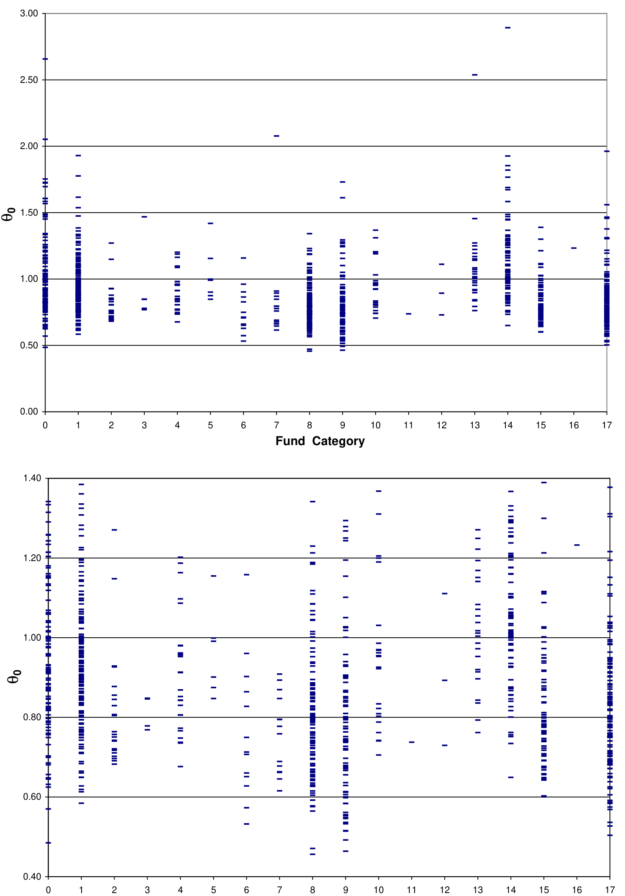
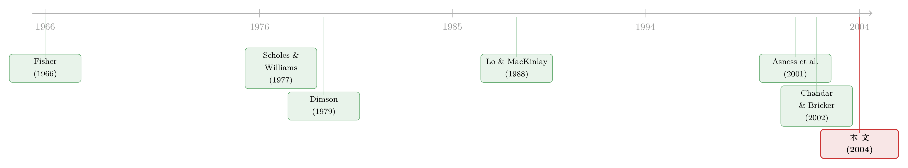

高夏普、低波动的对冲基金，藏着一台「收益熨平机」
本文读的是 Getmansky, Lo & Makarov (2004, Journal of Financial Economics)：对冲基金月度收益常有 30–50% 的序列相关，这看上去像「市场无效」，但作者证明最可能的真凶不是无效，而是 流动性与平滑收益——基金把难以定价的资产收益在时间上「摊匀」了。他们写下一个极简的移动平均平滑模型，推导出它如何压低波动、抬高夏普比率，并在 908 只 TASS 对冲基金上把「平滑系数」一只只估了出来。
1 一个让人不安的事实
先说一个很多人没太在意、但细想很别扭的现象。
对冲基金（hedge fund）的月度收益，常常表现出很强的 序列相关 (serial correlation)——这个月赚了，下个月大概率还赚；这个月赔了，下个月还接着赔。量级有多大？作者在正文里直接给出：很多基金的月度一阶自相关高达 30%–50%。
这是个尴尬的数字。因为按金融学的常识，序列相关几乎是「市场无效」的同义词：如果收益是可预测的，那就意味着有钱没被人捡走。而 Samuelson（1965）那句著名的「被正确预期的价格，其波动必然随机」早就告诉我们——只要有人能预测，他就会下重注去消化这份可预测性，直到它消失。
于是张力就来了：对冲基金号称汇集了金融业「最聪明的一群人」，激励又是出了名的凶猛（赚到钱才有提成）。如果他们自己的收益都明摆着可预测，那等于是说这群最聪明、最有动机的人，年复一年地把白花花的银子留在桌上不拿。这说得通吗？
作者的回答是：说不通。所以序列相关一定另有来源。这篇论文，就是要找出那个真正的来源，并把它量化出来。
2 先排除嫌疑人
像所有好的侦探故事一样，作者不急着抛出答案，而是先把几个看似合理的嫌疑人一个个排除。
嫌疑人一：市场无效。 上面已经讲了直觉——真要有可预测性，对冲基金经理会自己把它套利掉。这个解释经济上站不住脚。
嫌疑人二：时变预期收益 (time-varying expected returns)。 这是最「无害」的一个解释：Leroy（1973）、Rubinstein（1976）、Lucas（1978）早就指出，如果一个策略的均衡预期收益本身随时间变化（比如风险暴露在变），那么实现收益里出现序列相关，是完全符合有效市场的。作者用一个两状态的 马尔可夫机制转换 (Markov regime-switching) 模型把它写下来，认真校准了一遍：
$$R_t = \mu_1 I_t + \mu_0 (1 - I_t) + \varepsilon_t$$
然后他们算了一个极端情形——两个状态的预期收益差 |μ₁−μ₀| 高达每月 5%（即一年 60%），结果呢？诱导出来的一阶自相关，最大也只有 15%。再把无条件波动率从年化 20% 提到 50%，自相关反而进一步缩到 2.4%。想凑出数据里那种 30–50% 的自相关，你得把预期收益差拉到每月 20%（年化 240%），转移概率还要双双高于 80% 或低于 20%——这些参数荒谬到没法当真。
嫌疑人三、四：时变杠杆 (time-varying leverage) 与带高水位线 (high-water mark) 的激励费。 前者其实是时变预期收益的特例，后者会因为净值的路径依赖引入一点序列相关。但作者逐一建模后的结论一致：它们都能产生序列相关，却都远远凑不够 30–50% 这个量级。
四个嫌疑人排除完，真正的那个才登场。
3 真正的嫌疑人：把收益「摊匀」
关键的转折在这里。作者说：问题不出在「真实收益」上，而出在「我们看到的收益」上。
很多对冲基金持有不活跃交易的资产——新兴市场债、可转债套利头寸、场外衍生品、私募证券。这些东西没有随时可得的市场价。到了月末要报净值，经理只能用线性外推、用券商的「平滑报价」、用上一笔成交价去估。结果是：一次真实的价格冲击，不会在当月被完全反映，而是被分摊到接下来的好几个月慢慢释放出来。
这就是 平滑收益 (return smoothing)。它和经典的 非同步交易 (nonsynchronous trading) 文献是表亲，但动机要宽得多——非同步交易讲的是「收盘价定在不同的分钟」，时间错位是分钟、小时级别的；而对冲基金按月计价、月末同步定价，分钟级的错位根本解释不了。真正的病根是资产本身卖不动。
怎么把这件事写成数学？作者给了一个极简的模型。设 \(R_t\) 是第 \(t\) 期真实的、未被观测到的经济收益（设其独立同分布，均值 \(\mu\)、方差 \(\sigma^2\)），而我们在报表上看到的收益 \(R_t^o\)，是当期与过去若干期真实收益的一个加权平均：
约束还有一条：每个权重 \(\theta_j \in [0, 1]\)。
这个模型最妙的地方，在那条权重和为 1 的约束 \(\sum_{j=0}^k \theta_j = 1\)。它意味着平滑只是把收益在时间轴上重新分配，既不无中生有，也不凭空蒸发。让我们一步步看它推出什么。
第一步：均值不动。 取期望，
$$E[R_t^o] = \Big(\textstyle\sum_{j=0}^k \theta_j\Big)\mu = \mu.$$
因为权重和为 1，观测收益的长期均值和真实均值一模一样。换句话说，平滑骗不了你的「平均回报」——这也正是为什么它和「市场无效」无关：长期看，没有任何可被套利的额外收益。
第二步：方差被压低。 由 \(R_t\) 独立同分布，
$$\mathrm{Var}[R_t^o] = \Big(\textstyle\sum_{j=0}^k \theta_j^2\Big)\sigma^2 \;\equiv\; \xi\,\sigma^2,\qquad \xi \equiv \textstyle\sum_{j=0}^k \theta_j^2.$$
这里记 \(\xi\) 是平方和，像一个赫芬达尔指数。关键的不等式是：因为所有 \(\theta_j \ge 0\)，
$$\xi = \textstyle\sum_j \theta_j^2 \;\le\; \big(\sum_j \theta_j\big)^2 = 1.$$
于是 \(\mathrm{Var}[R_t^o] \le \sigma^2\)——观测到的波动，必然小于真实波动。平滑天然地让一只基金「看起来更稳」。不平滑（\(\theta_0=1\)）时 \(\xi=1\)；摊得越散，\(\xi\) 越小，波动被压得越狠。
第三步：序列相关被「制造」出来。 算一下滞后 \(m\) 期的自相关：
$$\rho_m \;=\; \frac{\sum_{j=0}^{k-m}\theta_j\,\theta_{j+m}}{\sum_{j=0}^{k}\theta_j^2},\qquad m = 1,\dots,k.$$
只要相邻权重都非零，分子就是正的——平滑凭空造出了正的序列相关，而真实收益 \(R_t\) 明明是白噪声。数据里那 30–50% 的自相关，正是这么来的。
第四步，也是对投资者最致命的一步：夏普比率被吹大。 既然均值不变、波动被压低，那么 夏普比率 (Sharpe ratio) 必然虚高：
$$\mathrm{SR}^o \;=\; \frac{\mu - r_f}{\sqrt{\xi}\,\sigma} \;=\; \frac{\mathrm{SR}}{\sqrt{\xi}} \;\ge\; \mathrm{SR}.$$
要还原真实夏普比率，只需乘上 \(\sqrt{\xi}\)。这就是论文标题里那个「平滑调整后的夏普比率 (smoothing-adjusted Sharpe ratio)」。作者还画出在三种参数化平滑剖面（直线、年数总和、几何递减）下，这个放大因子随滞后期数的变化——平滑得越久，夏普被吹得越离谱。

Figure 3: Multiplicative factor z for straightline, sum-of-years and geometric smoothing profiles as a
于是反转完成了：那个让对冲基金显得「高收益、低风险、与大盘无关」的迷人画像，很大一部分可能只是一台收益熨平机的产物。Lo（2002）此前就发现，用正确方法重算年化夏普比率，点估计能和天真算法相差高达 70%——本文给出了这背后的统一解释。
注意 \(\theta_0 > 1\)（等价地某些 \(\theta_j < 0\)）这种情形：它会带来负的序列相关，绝不可能来自平滑。数据里一部分基金（典型如管理期货）正是如此，恰好说明模型没有把所有东西都硬塞进「平滑」的解释里。
4 怎么把 θ 一只只估出来
模型有了，下一个自然的问题是：给定一只基金的历史收益，怎么把它的平滑系数 \(\theta_0, \theta_1, \dots\) 估出来？
作者的洞见是：观测收益 \(R_t^o\) 在结构上就是一个 移动平均 (moving-average, MA) 过程。他们取 \(k=2\)，即把观测收益当成一个 MA(2)：
$$R_t^o = \mu + \theta_0\,\eta_t + \theta_1\,\eta_{t-1} + \theta_2\,\eta_{t-2},$$
其中 \(\eta_t\) 是真实收益的新息。用极大似然 (maximum likelihood) 估出 MA 系数，再借「和为 1」的约束做归一化，就把 \((\theta_0,\theta_1,\theta_2)\) 识别出来了。识别能成立，靠的正是 \(\theta_j\in[0,1]\)、\(\sum\theta_j=1\) 这套约束——真有 alpha 的可预测性会破坏它，而平滑不会。
第二条路更贴近实务，也呼应了 Asness, Krail & Liew（2001）的发现：把基金收益对当期与滞后的市场收益一起回归，再把系数加总。Asness 等人当年正是发现，许多号称「市场中性」的对冲基金，一旦把滞后市场收益放进回归，加总后的市场暴露显著变大。本文证明：这恰恰是平滑的另一面——平滑剖面会隐含出一组滞后 beta，其量级与 Asness 等人报告的滞后 beta 完全吻合。两条看似无关的线索，在同一个模型下接上了头。

Table 13: contains the regression coefficients as well as the smoothing coefficients
5 数据：908 只基金的「流动性指纹」
最后是实证。作者用 TASS 数据库 里的 908 只对冲基金，样本期从 1977 年 11 月到 2001 年 1 月，逐只估计平滑系数。
结论非常直观，也非常有说服力。把全样本估出的 \(\hat\theta_0\) 画成分布，你会看到它在 0 到 1 之间铺开，绝大多数基金的当期权重明显小于 1——平滑是普遍存在的，而非个别现象。

Figure 5: Estimated smoothing coefficients y for all funds in the TASS Hedge Fund database. Funds
更关键的是横截面的差异：平滑的严重程度，几乎就是一张流动性地图。作者的原话是，序列相关最高的基金，往往正是最不流动的那些——新兴市场债、固定收益套利之类；而像管理期货这种持有高度流动的交易所合约的策略，\(\hat\theta_0\) 接近甚至超过 1（几乎不平滑）。也就是说，平滑系数可以当作一个量化流动性暴露的代理变量。这正是全文最有价值的副产品：它把「流动性」这个一向只能定性谈论的东西，变成了一个能从月度收益里反推出来的数字。
而一旦做了平滑调整，一些「最成功」的策略的业绩画像就会大幅缩水——高夏普里，相当一部分其实是 \(1/\sqrt{\xi}\) 这个放大镜变出来的。
6 文献脉络
把这条线索往回拉，你会看到一条很清晰的演进。
最早，是 Fisher（1966）注意到非同步交易会让股指收益产生伪自相关。接着，一批更精细的非同步交易模型出现——Scholes & Williams（1977）、Dimson（1979）给出了在稀疏交易下估计 beta 的办法，Lo & MacKinlay（1988）则系统刻画了它对组合收益自相关的影响（Campbell, Lo & MacKinlay 1997 的教科书对这条线有完整综述）。但这支文献始终盯着股票市场微观结构，时间错位是分钟到几天的量级。
然后，问题被搬到了基金语境：Asness, Krail & Liew（2001）发现「市场中性」基金的滞后市场暴露被严重低估；同期，关于陈旧价格 (stale prices) 与共同基金净值的研究（Boudoukh et al. 2002 等）揭示了伪自相关如何造成投资者之间的财富转移。而真正把矛头指向「主动平滑」的，是 Chandar & Bricker（2002）——他们在封闭式基金里发现经理会用估值的自由裁量权去优化业绩。

本文（2004）站在这一切的交汇点上：它不再把序列相关归于股票微观结构，而是统一归因于流动性，并第一次给出一个能逐只基金估计、能调整夏普比率、能当流动性代理的完整计量框架。（关于流动性如何在基金层面酿成脆弱性，可参见《基金越难脱手，它手里的债券越「抖」》与《加息前夜的悄然撤离：当「算不准的净值」反而成了基金的减震器》；关于夏普比率为何能被「刷」，可参见《把「跑分」交给基金经理之前，先问问这个分数能不能被刷》。）
7 评论与延伸（Q&A + 研究方向）
(a) 几个可能的疑问
Q：序列相关不就是市场无效吗？凭什么说成是流动性？
关键在那条「权重和为 1」的约束：它保证平滑不改变长期均值，所以不存在可被套利的额外收益。真实收益仍是白噪声，可预测性只存在于「被熨平后的观测值」里，而那部分对应的资产你根本卖不动、套不了利。无效市场假说要求的是真实经济收益可预测，这里恰恰不成立。
Q：平滑会不会让基金虚报了总回报？
不会。模型推出 \(E[R_t^o]=\mu\)，均值分毫不差。平滑只压低方差、抬高夏普比率、制造序列相关——它骗的是你的风险度量，不是你的平均回报。
Q：「被动的流动性平滑」和「主动的业绩操纵」，模型分得开吗？
严格说分不开——同一组 \(\theta\) 既能来自卖不动的资产，也能来自经理刻意的估值裁量。本文坦诚这一点，并把它当作特性而非缺陷：\(\theta\) 的解释要随机制调整，但无论哪种机制，底层驱动都是流动性暴露。Chandar & Bricker（2002）的会计证据则提示，主动那一支确实存在。
Q：MA(k) 估计会不会把「真有 alpha 的动量」误判成平滑？
约束 \(\theta_j\in[0,1]\)、\(\sum\theta_j=1\) 是识别的护栏：真实的可预测性会突破这套约束（比如要求 \(\theta_0>1\) 或负权重），而那恰恰被读成「负序列相关」，与平滑相反。再叠加横截面上「越不流动越平滑」的模式，证据链就比较硬了。
Q：为什么用月度数据，而不是更高频？
因为对冲基金本就按月计价，月末同步定价。分钟、小时级的非同步交易在这里根本不适用——能造出 30–50% 月度自相关的，只能是「资产卖不动」这种宽口径的流动性，而非收盘价的时间错位。
Q：这对一个真金白银的配置者意味着什么？
三件事：把看到的夏普比率乘以 \(\sqrt{\xi}\) 再信；把高 \(\hat\theta\)（重平滑）读成你在承担流动性风险、要的是流动性溢价；并且警惕申购/赎回时点上的财富转移——陈旧的净值会让进出场的投资者占到或吃到别人的亏。
(b) 几个可能的研究问题与提案
1. 把平滑模型搬到公司债与私募信用基金。 【经济故事】公司债、尤其是私募信用 (private credit) 持有的资产比对冲基金更不流动，月度/季度净值平滑只会更严重；当前私募信用的「低波动、高夏普」叙事，很可能有一大块是 \(1/\sqrt{\xi}\) 变出来的。 【可行性】高。用 TRACE 成交数据构造债券层面的真实价格，配合基金报告收益，直接套用本文的 MA 估计；识别靠债券流动性的横截面差异。与我自己关于外资与美国公司债流动性的工作天然衔接。
2. 外资持有人会不会被平滑「骗」得更狠？ 【经济故事】外资在不熟悉、不流动的本地市场里，更依赖经理报出的平滑净值；如果他们据此追逐高夏普，平滑就可能系统性地误导跨境资本配置。 【可行性】中。需要按投资者国籍拆分的持仓-收益数据（如某些主权基金或托管行数据），识别上要把「平滑暴露」与「信息劣势」区分开，不易但 doable。
3. 平滑系数作为流动性危机的实时预警。 【经济故事】若把 \(\theta\) 设成时变的，平滑程度的突然上升可能正是流动性枯竭的早期信号——经理越来越「估」而不是「卖」。 【可行性】中。需要滚动窗口或状态空间估计，并用 2008、2020 这类危机窗口做样本外验证；样本量在窗口内偏小是主要障碍。
4. 平滑与赎回脆弱性的因果链。 【经济故事】平滑压低了报告波动，可能诱使资金过度涌入流动性差的基金，反而埋下挤兑的种子——陈旧净值给了先赎回者套利空间。 【可行性】高。把 \(\hat\theta\) 当横截面变量，匹配基金资金流与赎回限制（gates、lockups），看高平滑基金是否在压力期遭遇更强的赎回-折价螺旋。
我的判断。 这篇论文的贡献是「以小搏大」的典范：一个只有几个参数、约束清晰的 MA 平滑模型，同时解释了对冲基金身上四件看似无关的怪事——高序列相关、低波动、虚高夏普、以及对滞后市场收益的暴露——并顺手把「流动性暴露」变成一个可估计的数字。它的优雅，恰恰在于那条「权重和为 1」的约束：让平滑既无关均值、又无关市场有效性，把一个本会被误读为「无效」的现象，干净地翻译成「流动性」。
对识别，我有两点保留。其一，平滑系数与真实序列相关在原则上不可分——若基金的真实收益本身略有自相关（比如策略含动量），\(\hat\theta\) 就会被污染，本文主要靠经济论证而非内生工具来排除这种可能。其二，TASS 样本众所周知存在幸存者偏差与回填偏差（Brown, Goetzmann & Ibbotson 1999 早有警示），而最不流动、最重平滑的基金往往也最容易消失，这会让横截面上「流动性—平滑」的关系既可能被低估、也可能被幸存样本扭曲。
后续我最想看到的，是把这套框架接到有外部价格基准的资产上——比如公司债，用 TRACE 的真实成交去校准「真实收益」，从而把「平滑」从「真实自相关」里干净地剥出来，给这个二十年来被反复引用却很少被外部验证的模型，做一次真正的对账。
参考文献
- Asness, C., Krail, R., Liew, J. (2001). Do hedge funds hedge? The Journal of Portfolio Management 28(1), 6–19.
- Brown, S., Goetzmann, W., Ibbotson, R. (1999). Offshore hedge funds: survival and performance 1989–1995. Journal of Business 72(1), 91–118.
- Campbell, J., Lo, A., MacKinlay, C. (1997). The Econometrics of Financial Markets. Princeton University Press, Princeton, NJ.
- Chandar, N., Bricker, R. (2002). Incentives, discretion, and asset valuation in closed-end mutual funds. Journal of Accounting Research 40(4), 1037–1070.
- Dimson, E. (1979). Risk measurement when shares are subject to infrequent trading. Journal of Financial Economics 7(2), 197–226.
- Fama, E. (1970). Efficient capital markets: a review of theory and empirical work. Journal of Finance 25(2), 383–417.
- Fisher, L. (1966). Some new stock market indexes. Journal of Business 39(1), 191–225.
- Getmansky, M., Lo, A., Makarov, I. (2004). An econometric model of serial correlation and illiquidity in hedge fund returns. Journal of Financial Economics 74(3), 529–609.
- Lo, A. (2002). The statistics of Sharpe ratios. Financial Analysts Journal 58(4), 36–52.
- Samuelson, P. (1965). Proof that properly anticipated prices fluctuate randomly. Industrial Management Review 6(2), 41–49.
- Scholes, M., Williams, J. (1977). Estimating betas from nonsynchronous data. Journal of Financial Economics 5(3), 309–327.